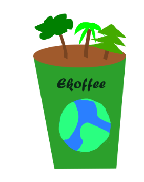
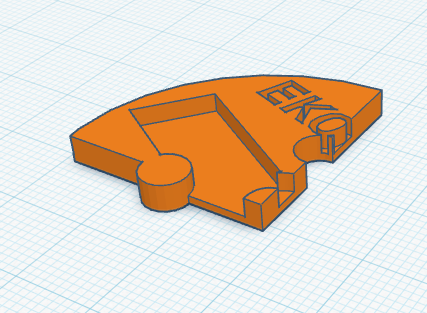
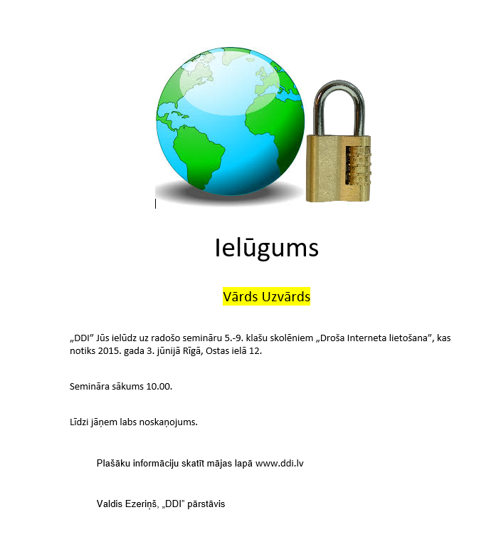
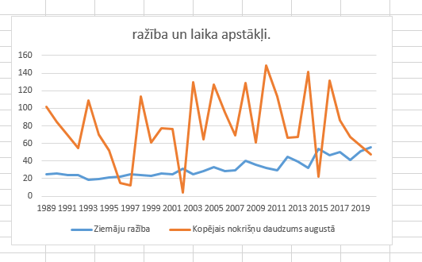

Laura Romeiko 10.sb
Vektorgrafika un rakstgrafika
Šajāmācību gada es esmu darbojusies ar dažādām datora programmām, piemēram, Excel,IncScape, un arī esmu iepazinusi jaunu programmu - Gimp. Esmu iemācījusies daudzus rīkus un funkcijas, ko izmantot, lai atvieglotu darbu ar šīm lietotnēm. Šeit ir daļa no maniem paveiktajiem darbiem pa visam datorikas tēmām.
Iespējas rastrgrafikas lietotnē GIMP
Saplēstās bildes zīmējums un vārds

Iespējas rastrgrafikas lietotnē InkScape
mani darbiņi
Grupu darbs
Kopā ar klasesbiedrenēm ija jāizveido uzņēmuma ideja.Mūsu ideja bija veidot vienreizlietojamās kafijas krūzītes, kas būtu no dabīgiem materiāliem un varētu pārstrādāties. Attēlā ir redzama ir mana logo ideja.
Mūsu krūzītes būtu tādas kas var izturēt augstas temperatūras un nesadalītos kamēr tās lieto.Tās sadalītos dabīgi zemē, atšķirībā no plastmasas krūzītēm.
Uzņemuma logo skice
3D modelēšana
Video apstrades pamatprincipi
MS Word rīku pielietošana teksta formatēšanā

Excel

Ja vēlies uzzināt vairāk par ergonomisku darba vidi spied šeit → ergonomija